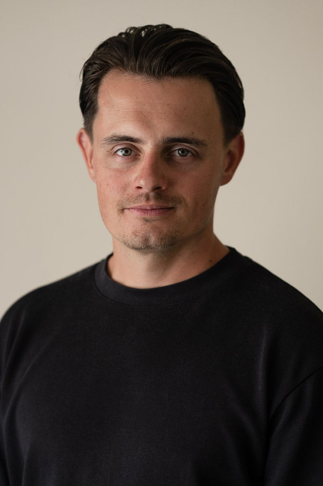
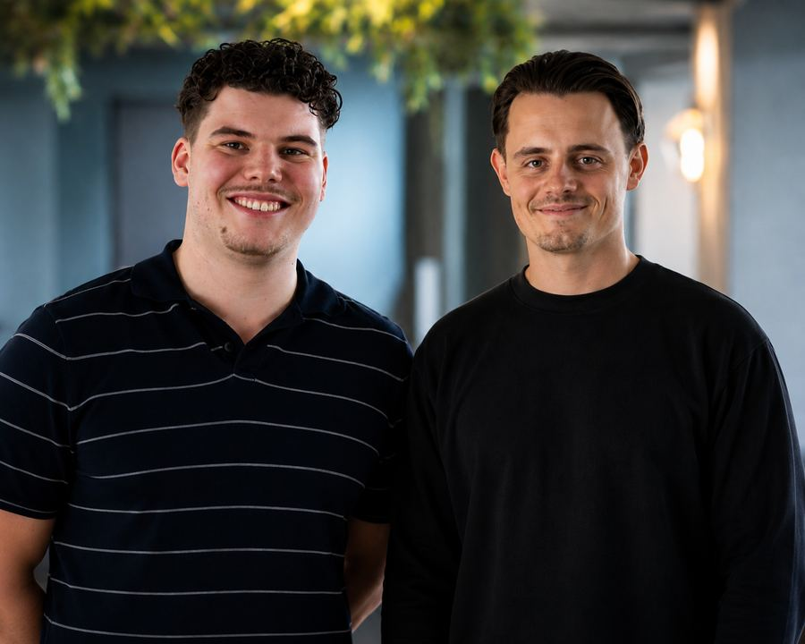
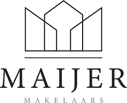
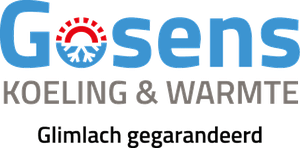
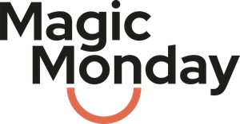

Ik zet de systemen neer waarmee je bedrijf kan groeien: automatisering, koppelingen tussen tools en processen die vanzelf lopen. Waar nodig vul ik dat aan met coaching en training, zodat het niet alleen sneller loopt, maar ook beter.

De groeiscan wijst waar de hefboom zit
Commerciële ontwikkeling raakt aan richting, positionering, structuur, performance en de dynamiek binnen een team of in jezelf. Waar het klopt, versnelt groei, waar het schuurt, vertraagt het vaak ongemerkt.
De groeiscan maakt zichtbaar waar de hefboom zit: in je systemen, of in jezelf en je team. Binnen enkele minuten ontstaat helderheid. Wat je daarmee doet, bepaalt de volgende stap.
Doe de scanVeel bedrijven verliezen geen omzet door slechte wil, maar door rommelige processen: mails die blijven liggen, afspraken die los staan van het CRM, checklists die niemand meer volgt. Dat geldt niet alleen voor sales, dat geldt voor het hele bedrijf.
Dat bouw en koppel ik samen met Maarten, mijn technische partner in dit soort trajecten. Hij zorgt voor de techniek, ik zorg dat het systeem aansluit op hoe er in de praktijk gewerkt wordt.

Enkele voorbeelden van wat we al gebouwd hebben:
Klantmails worden automatisch gelezen en beantwoord door AI die weet wat er verwacht wordt.
Afspraken met klanten worden automatisch ingepland en direct gekoppeld aan je bestaande CRM.
Van lead tot bezichtiging tot afhandeling: het hele proces loopt automatisch door.
Vaste processen die zichzelf laten zien, zodat er niks meer tussen wal en schip valt.
Groei zit niet alleen in techniek. Hoe jij denkt, met druk omgaat en je team aanstuurt, bepaalt net zo hard het resultaat. Daarom werk ik vanuit drie invalshoeken, met NLP en systemisch werk als basis.
Als trainer help ik jou of je team om niet alleen méér te verkopen, maar om op een bewuste, authentieke manier waarde te creëren. Met de kracht van NLP doorbreken we belemmerende overtuigingen en structureren we het salesproces van A tot Z.
In mijn training kijk ik niet alleen naar technieken, maar naar 'de waarom' achter het communiceren, verbinden en overtuigen. We werken in praktische sessies, rollenspellen en realistische praktijksituaties.
Of je nu meer business wilt, klantrelaties wil verdiepen of het hele salesteam naar een hoger niveau wil tillen: samen zorgen we voor meer impact, meer omzet en gesprekken waar zowel jij als de klant zich goed bij voelen.
Ervaar je stress, mentale onrust of een voortdurend gevoel van paniek? Heb je het idee dat je vastzit in je hoofd of dat je niet goed meer weet welke richting je op wilt in je werk of in je leven?
Als coach help ik je om weer innerlijke rust te vinden, beter om te gaan met werkdruk en prestatiedruk, en om meer zelfvertrouwen te ontwikkelen. Samen onderzoeken we wat er achter je onrust zit en hoe jij stap voor stap weer grip krijgt op je gedachten en emoties.
Of het nu gaat om loopbaanvragen, het omgaan met emoties, of het herstellen van de balans tussen werk en privé, ik begeleid je op een persoonlijke en nuchtere manier.
Veel frictie in teams zit niet in wat er gezegd wordt, maar in wat er niet gezegd wordt. Met technieken uit NLP en systemisch werk maak ik onderliggende patronen zichtbaar: waar loopt het gesprek vast, wie neemt welke rol in, en wat wordt er stilzwijgend van elkaar verwacht.
Dat kan in een teamsessie, via een opstelling, of in individuele gesprekken. Het doel is steeds hetzelfde: dat mensen elkaar weer helder verstaan, zonder aannames.
Kosteloos kennismakingsgesprek, telefonisch of in persoon. Samen bespreken we waar je nu staat en wat je nodig hebt.
We gaan stap voor stap aan de slag met wat er speelt — in jouw tempo, met ruimte voor wat er echt toe doet.
We kijken samen terug: wat is er veranderd, en wat heb je nodig om dat vast te houden.



Toen ik mijn carrière begon, was mijn doel simpel: geld verdienen, financieel vrij zijn en ooit een dikke Porsche rijden. Ik startte als sales trainee en leerde snel de kunst van koud bellen, een harde, maar effectieve leerschool. Het harde werken wierp zijn vruchten af: ik maakte snel carrière en groeide door tot accountmanager, compleet met een prachtige auto en een comfortabel leven. Alles leek perfect.
Maar diep vanbinnen voelde het anders.
Ondanks mijn succes en de glans van het leven dat ik had opgebouwd, was er een stemmetje dat me niet met rust liet. Een onderbuikgevoel dat iets niet klopte. Hoe meer deals ik sloot, hoe sterker die tweestrijd werd. Enerzijds het verlangen om het 'goed' te doen; betekenis te vinden, en anderzijds de druk om de volgende commerciële mijlpaal te halen.
Ik heb lang getwijfeld over wat ik écht wilde en waar ik voor sta. Het was geen beslissing die ik in één dag nam. Het kostte jaren van reflectie, vallen en opstaan, en het durven luisteren naar dat onderbuikgevoel. Uiteindelijk vond ik mijn pad, een manier van leven en werken die niet alleen goed voelt, maar ook in lijn is met wie ik werkelijk ben.
Met mijn ervaring en inzichten help ik je graag. Of het nu gaat om persoonlijke groei, professionele doelen of het vinden van rust in de chaos, samen zetten we stappen naar een leven waarin jij volledig tot je recht komt.
Heb je vragen of wil je gewoon eens vrijblijvend sparren? Neem dan contact op.